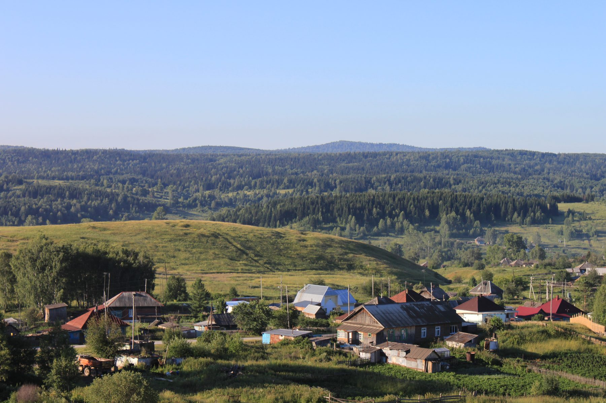

Скважины в Салаире: как древние породы кряжа влияют на воду
Салаирский кряж — одно из старейших геологических образований региона, и породы здесь принципиально отличаются от равнинной части области. Прослеживаем, как это определяет и состав воды, и технологию бурения.
«У нас тут особая геология» — фраза, которую в Салаире можно услышать от местных почти в любом разговоре о скважинах. За ней действительно стоит содержание, а не просто местная гордость: Салаирский кряж — одна из самых старых геологических структур региона, и порода здесь принципиально отличается от той, что бурят в соседней Кузнецкой котловине. Прослеживаем, как эта разница в возрасте и составе пород доходит до конкретных вещей — жёсткости воды в стакане и того, каким способом здесь вообще имеет смысл бурить.

Фото: Salairsus, CC BY-SA 4.0, Викисклад. Кадрировано.Палеозойские породы против рыхлых отложений котловины
Большая часть южного Кузбасса — Новокузнецк, Прокопьевск, Белово, Ленинск-Кузнецкий и другие города котловины — стоит на толще угленосных осадочных пород возрастом в десятки, максимум чуть больше сотни миллионов лет: пермские и нижнекаменноугольные песчаники, алевролиты и сами угольные пласты, а поверх них — совсем молодые, геологически говоря, четвертичные речные наносы. Подробный послойный разрез этой части территории — в статье геология юга Кузбасса.
Салаирский кряж — принципиально другая структура. Это одно из горно-складчатых обрамлений Кузнецкого угольного бассейна, сложенное палеозойскими породами: карбонатными и терригенными толщами, которые формировались и складывались в горный рельеф задолго до того, как в соседней котловине начали откладываться угленосные пласты. К возрасту здесь стоит отнестись не как к абстрактной цифре, а как к объяснению физики: за многие десятки и сотни миллионов лет эти породы успели пройти тектоническое смятие, растрескивание, частичное окарстование — то есть стать совсем другой средой для подземной воды, чем рыхлые молодые наносы котловины, где вода просто заполняет поры между зёрнами песка.
Практическое следствие для скважины: там, где в котловине вода движется в порах и трещинах относительно молодой осадочной толщи, в Салаире она движется по системе трещин и карстовых полостей в куда более твёрдой и старой породе — и оба параметра, которые интересуют владельца участка (сколько воды даст скважина и какой она будет на вкус), определяются здесь совершенно другой механикой.
Карбонатные породы, карст и что это даёт по жёсткости
Ключевая для Салаира порода — карбонатные толщи, в первую очередь известняки. Среди всех пород региональной гидрогеологической структуры, в которую входит и Салаирский кряж, именно закарстованные известняки показывают наибольшую водообильность: по данным регионального доклада о состоянии подземных вод, удельные дебиты скважин в таких породах достигают 12,7–13,4 л/с, а расходы родников — 5–10, местами до 15 л/с. Наиболее обводнена верхняя, выветрелая и растрескавшаяся часть разреза мощностью порядка 50–90 м, распространяющаяся обычно до 150 м, а в зонах тектонических нарушений — до 170–230 м.
У этой же водообильности есть прямое следствие для качества воды, которое стоит понимать заранее, а не удивляться ему в протоколе анализа. Карбонатная порода — это в основе своей известняк, то есть карбонат кальция, и вода, проходящая через трещины и карстовые полости в такой породе, неизбежно растворяет часть материала стенок этих трещин. Результат — вода из карбонатного массива обычно жёстче, чем вода из песчаных или глинистых отложений: это общий принцип гидрогеохимии карбонатных пород, а не особенность именно салаирских скважин. Показательно, что даже на фоне остальной части того же гидрогеологического массива, где вмещающие воду породы — гидрокарбонатные кальциевые с минерализацией 0,2–0,9 г/дм³, карбонатные разности выделяются собственной, отдельно посчитанной жёсткостью.
Значит ли это, что вода в Салаире обязательно окажется слишком жёсткой для комфортного использования? Однозначного ответа на этот вопрос заранее не даст никто: конкретная жёсткость на конкретном участке зависит от того, в какую именно часть карбонатной толщи попала скважина и насколько активно происходит водообмен именно в этой точке. Единственный надёжный способ узнать фактическую цифру — лабораторный анализ уже пробуренной скважины, а не общее знание о регионе.
Трещинные воды и выбор горизонта
В породах массива, к которому относится Салаир, вода в принципе не образует единого, равномерно распределённого пласта, как это часто бывает в осадочных толщах котловины. Она движется по системе трещин, и водообильность конкретной точки зависит не столько от глубины бурения, сколько от того, насколько сильно раздроблена и растрескана порода именно в этом месте. Скважина, вскрывшая зону активной трещиноватости, может дать уверенный приток уже на скромной глубине; скважина в нескольких десятках метров от неё, но в монолитном, слабо нарушенном участке той же породы, — не дать почти ничего на существенно большей глубине.
Отсюда и практическая разница с бурением в котловине: там задача — определить, на какой глубине залегает нужный горизонт, и вскрыть его; здесь задача ближе к поиску самой трещиноватой зоны, а не конкретной глубины. Это не означает, что бурение в Салаире менее предсказуемо в целом, — опытный подрядчик ориентируется на признаки трещиноватости по ходу проходки, на данные соседних скважин в округе и на общее геологическое строение участка, — но именно поэтому точную глубину и дебит здесь реалистично назвать только по факту проходки, а не заранее по одному общему правилу для всего посёлка.
Есть и обратная сторона того же принципа, важная при планировании: глубже определённой отметки — по данным доклада, обычно за пределами 150–250 м в этой структуре — минерализация подземных вод начинает расти, а состав меняется на сульфатный. Погоня за глубиной здесь не гарантирует ни лучшего дебита, ни лучшего качества воды: удачно найденная трещиноватая зона на умеренной глубине часто выгоднее, чем сама по себе большая глубина ствола.
Наследие полиметаллической добычи: на что смотреть в анализе
У Салаирского кряжа есть ещё одна особенность, которая делает его геологию интересной не только гидрогеологам, — это старый и в некоторых точках действующий горнорудный район. По данным регионального доклада, в пределах Салаирского кряжа разведаны месторождения медно-колчеданных руд, а также месторождение окисленных марганцевых руд. Это не абстрактная историческая справка: добыча полиметаллических руд — меди, марганца и сопутствующих им элементов — технологически связана с вскрытием и нарушением тех же горных пород, через которые движется подземная вода.
Здесь важно не подменить осторожную формулировку категоричной. Прямых данных о загрязнении подземных вод на конкретных бытовых участках Салаира в доступных источниках нет, и утверждать, что вода из скважины рядом со старым рудником обязательно содержит примеси металлов, было бы домыслом, а не фактом. Правильная формулировка другая: соседство с районом полиметаллической добычи — не диагноз, а основание для того, чтобы включить в лабораторный анализ воды после бурения не только стандартный набор показателей, но и проверку по отдельным металлам, характерным именно для медно-колчеданных и марганцевых руд. Какие показатели вообще стоит заказывать и как читать готовый протокол — разобрано в статье анализ воды из скважины.
Как это меняет технологию проходки
Возраст и твёрдость породы — не только вопрос состава воды, но и вопрос того, как физически ведётся бурение. Плотная, местами закарстованная карбонатная порода проходится иначе, чем рыхлые осадочные толщи котловины или тем более четвертичные наносы речных долин: инструмент изнашивается быстрее, темп проходки в твёрдых интервалах заметно падает, а при попадании в карстовую полость возможна и обратная ситуация — резкая, неожиданная просадка инструмента в пустоту. Чем принципиально различаются подходы к разрушению породы и какой способ для каких пород эффективнее, подробно разобрано в статье роторное и ударно-канатное бурение — Салаир как раз тот случай, где выбор способа и точная реакция на характер породы по ходу проходки имеют значение больше, чем в среднем по равнинной части области.
Похожая по духу задача — бурение не в равнинной котловине, а в породах горной складчатой структуры — решается и в другом районе региона, хотя там определяющим фактором выступает не столько состав породы, сколько сам горный рельеф участка: бурение в горной местности Таштагола. Оценить, с какой именно породой и на какой глубине придётся иметь дело на конкретном участке в Салаире, точнее всего на месте — при заказе бурения скважины на воду.